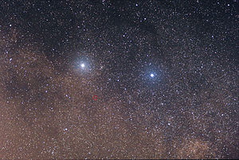
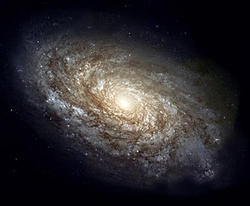

My name is tejaswar and I am a btecg graduate
Time is the continued sequence of existence and events that occurs in an apparently irreversible succession from the past, through the present, into the future.It is a component quantity of various measurements used to sequence events, to compare the duration of events or the intervals between them, and to quantify rates of change of quantities in material reality or in the conscious experience.Time is often referred to as a fourth dimension, along with three spatial dimensions.
A black hole is a region of spacetime where gravity is so strong that nothing, including light or other electromagnetic waves, has enough energy to escape its event horizon.

Alpha Centauri (α Centauri, Alpha Cen, or α Cen) is a triple star system in the southern constellation of Centaurus. It consists of 3 stars: Rigil Kentaurus (Alpha Centauri A), Toliman (B) and Proxima Centauri . Proxima Centauri is also the closest star to the Sun at 4.2465 light-years .
A galaxy is a system of stars, stellar remnants, interstellar gas, dust, dark matter, bound together by gravity.The word is derived from the Greek galaxias literally 'milky', a reference to the Milky Way galaxy that contains the Solar System.
In astrophysics, an event horizon is a boundary beyond which events cannot affect an observer. Wolfgang Rindler coined the term in the 1950s.